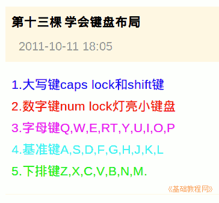

2011-2012 第一学期七年级电脑操作基础教学课程设计
作者：TeliuTe 来源：基础教程网
十三、学会键盘布置 返回目录 下一课
学习目标：学会常用的大写键、小键盘，字母键；
注意事项：按照背诵古诗的方法把字母键背下来；
1、键盘布局
1）大写可以用 Casp lock 和 shift 键；
2）数字键Num lock 灯要亮，用小键盘；
3）字母键 QWERT,YUIOP；
4）基准键 ASDF,JKL;（分）号，下排键 ZXCVBNM；

板书设计：第13课 学会键盘布局
1.大写键caps lock和shift键.
2.数字键Num lock 灯亮小键盘.
3.字母键 QWERT,YUIOP
4.基准键 ASDF,JKL;（分）号
5.下排键 ZXCVBNM
课后记 2011-10-11 19:27：
想着要把键盘背一下，一个一个过一遍
学生背东西都成条件反射了，一听要背东西如临大敌
--
进教室前先讲一下，要背键盘学的时候心里要有数
还有个大写键和数字键了讲一下，有些干扰也只好讲了
--
caps lock 和 num lock 讲的时候一边操作一下，
这样就得一会锁一会解开学生机，有些乱感觉
--
后面的字母键，三排多读几遍
先齐读再一组一组读，后面改成男生读、女生读
分组太多了，读后面分心了些
--
一个一个来背，分成三句来背
第一个打头字母要对，然后要快，吭吭巴巴就是错了
--
指法和日志没法检查了，设个组长就好了
下回再设，记着到时别忘记了
--
讲完先不解锁，让背一会，一开了就光想着弄别的
等有几个快的背完了再解开，这样也背一会了有
本节学习了键盘布局的基础知识，如果你成功地完成了练习，请继续学习下一课内容；
返回目录 下一课
本教程由86团学校TeliuTe制作|著作权所有
基础教程网：http://teliute.org/
美丽的校园……
转载和引用本站内容，请保留版权信息和本站链接。